When things don't divide evenly — what do you do with what's left over?
5 chapters · 10 challenges · Remainders · Year 4
🎙️ Narrated Edition
Narrated by Eric · Blaze voiced by Jessica · Elder Crag voiced by Bill
Chapter 1 of 5
⭐ 0 / 10
🪨 Chapter 1 — The Ridge That Nothing Fits
Tangle Looked Back. Now What?
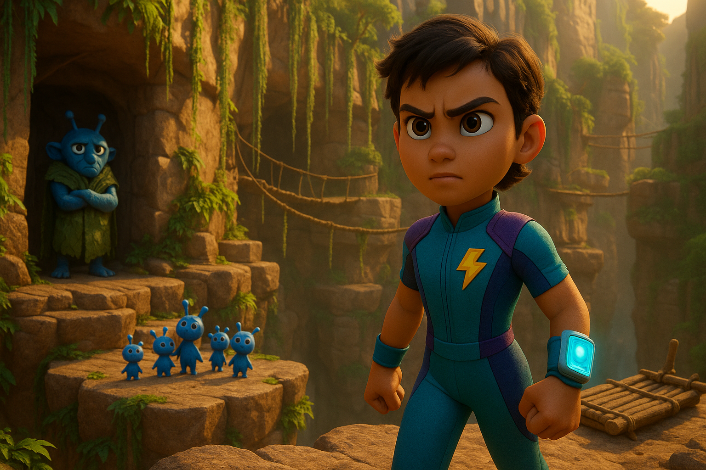
Press ▶ to hear the story
Tangle had looked back. That one moment changed everything. Footprints in Branchwick. Wrong divisions in Fernmoss. Grouping patterns at the Cascade Festival. Arrays in the sacred forest. And then — a bundle of twelve vines, placed at her feet. Whatever Tangle was, it was trying to reach her.
But right now, Blaze had a more urgent problem. Split Ridge was the most awkward village in the Verdant Canopy — carved into a cliff face, with platforms at different heights connected by rope bridges. Nothing here was regular. Nothing divided evenly. And thirteen Sprockets were stranded on the far side of a crumbling ledge, waiting for help.
Elder Crag, a weathered Sprocket with only two of his original three antennae, looked up at Blaze with weary eyes. "Each raft holds four. We have one raft. How many crossings do we need?"
🔒 Listen to the story first to unlock your challenge!
🌱 Warm-UpRemainders · Year 4
🪵
Y4 Question 1 — Remainders: Round Up
13 Sprockets need to cross. Each raft holds 4.
How many crossings are needed to save everyone?
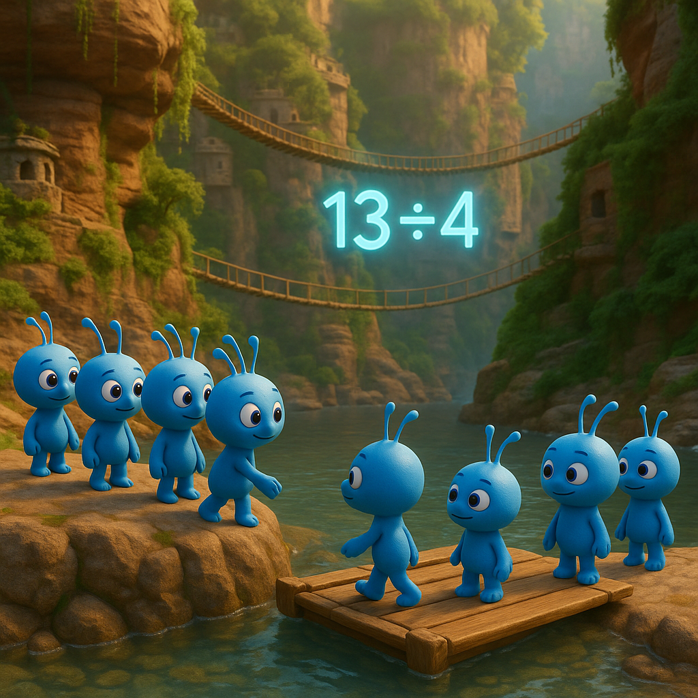
🪨 Chapter 2 — What to Do With What's Left
On the Ridge, Leftovers Mean Arguments.
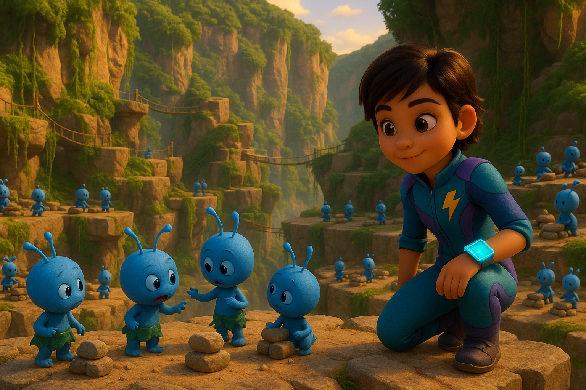
Press ▶ to hear the story
The rescued Sprockets were safe on the platform. But now the real trouble started. Split Ridge ran entirely on equal shares — and equal shares at Split Ridge almost never came out perfectly.
Twenty-two building rocks for five Sprocket families. Three families wanted to round up. One wanted to throw the extras off the cliff. Blaze had a better idea: split the leftover into fractions. Each family gets four rocks, and the two leftover rocks are shared between all five as two-fifths each.
"What's two-fifths of a rock?" Elder Crag asked. "Ask me a harder one," said Blaze.
🔒 Listen to the story to unlock this challenge!
⭐ EasyRemainders · Year 4
🪨
Y4 Question 2 — Remainders
22 rocks shared between 5 families.
How many whole rocks per family, and how many left over?
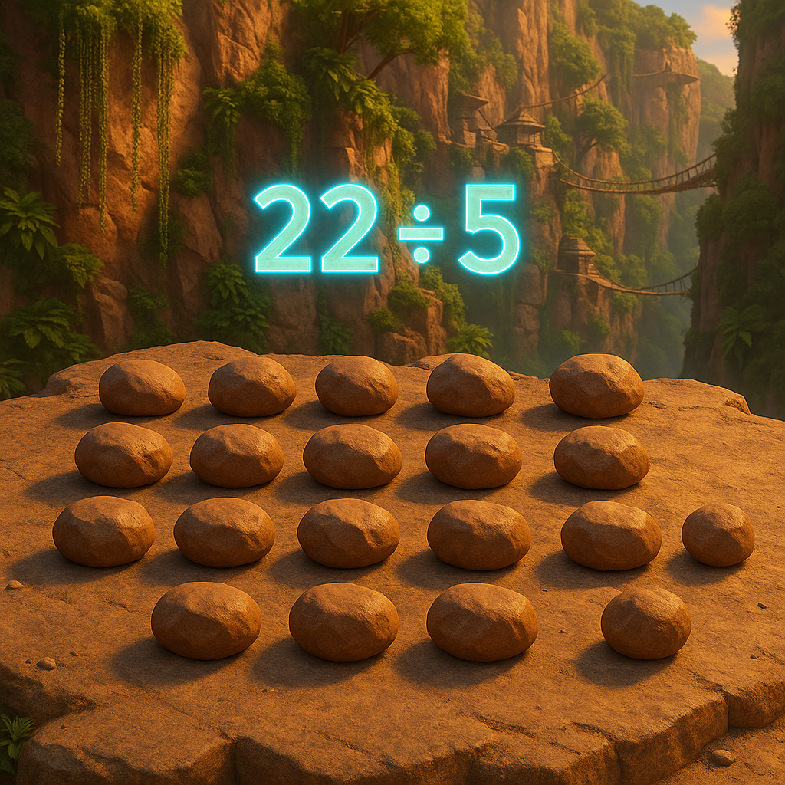
Press ▶ to continue
The cook's fire-nut supply: nineteen nuts for six Sprockets. By tradition at Split Ridge, the one leftover always goes to the eldest.
🔒 Listen to unlock!
⭐ EasyRemainders · Year 4
🔥
Y4 Question 3 — Remainders
19 fire-nuts shared between 6 Sprockets.
How many each, and how many left over?
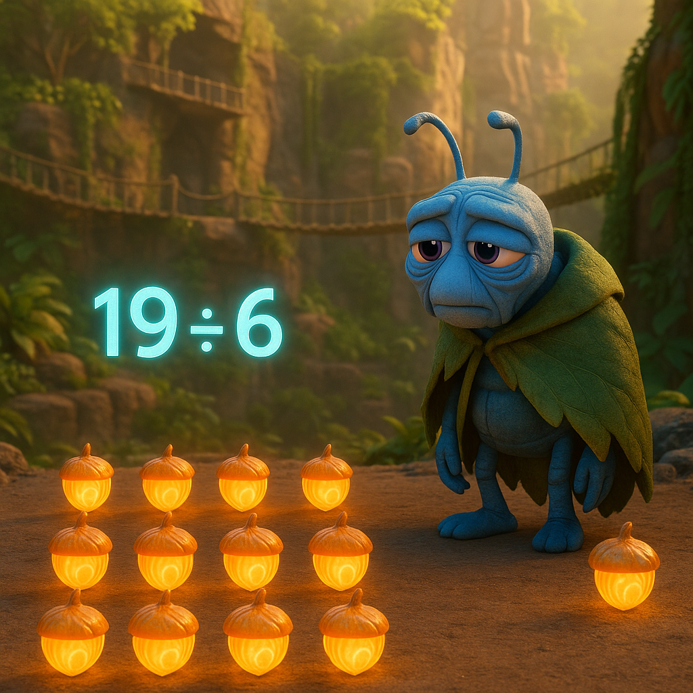
🌿 Chapter 3 — Tangle Arrives
It Followed Her All the Way Here.
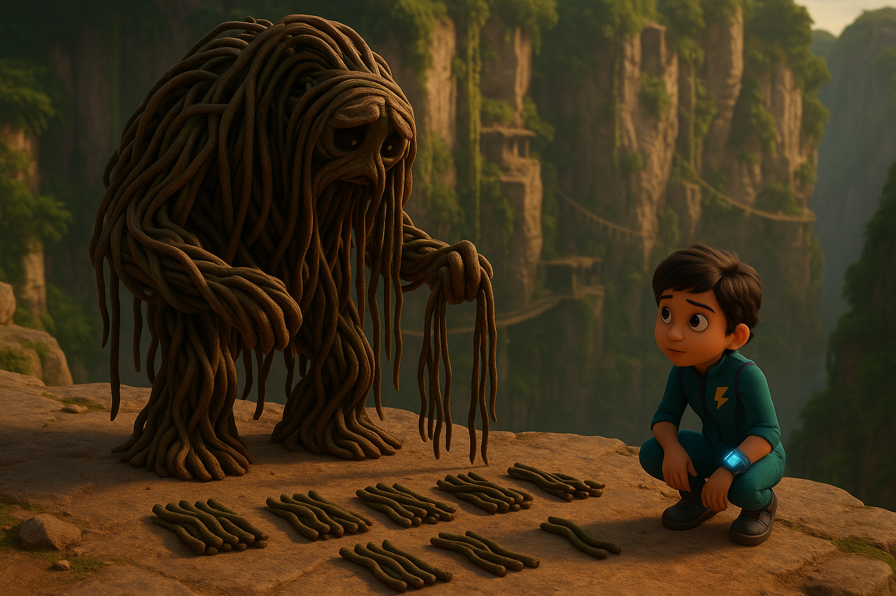
Press ▶ to hear the story
The ground shook slightly. Then stopped. Then shook again. Blaze turned slowly.
Tangle had followed her from the Array Forest all the way to Split Ridge. It stood at the edge of the cliff platform, an enormous tangle of natural brown vines, carrying fifty vines in its trailing tendrils. It set them down — and began arranging them into groups of eight. Seven groups of eight, and two left over. Tangle stopped. Stared at the two remaining vines. Did it again. Same result. The two leftover vines clearly distressed it.
Blaze crouched down beside the vines. "I know," she said quietly. "Sometimes things just don't divide evenly. That's called a remainder. Watch."
🔒 Listen to the story to unlock this challenge!
⭐⭐ MediumRemainders · Year 4
🌿
Y4 Question 4 — Tangle's Remainder
Tangle has 50 vines, arranged in groups of 8.
How many groups, and how many left over?
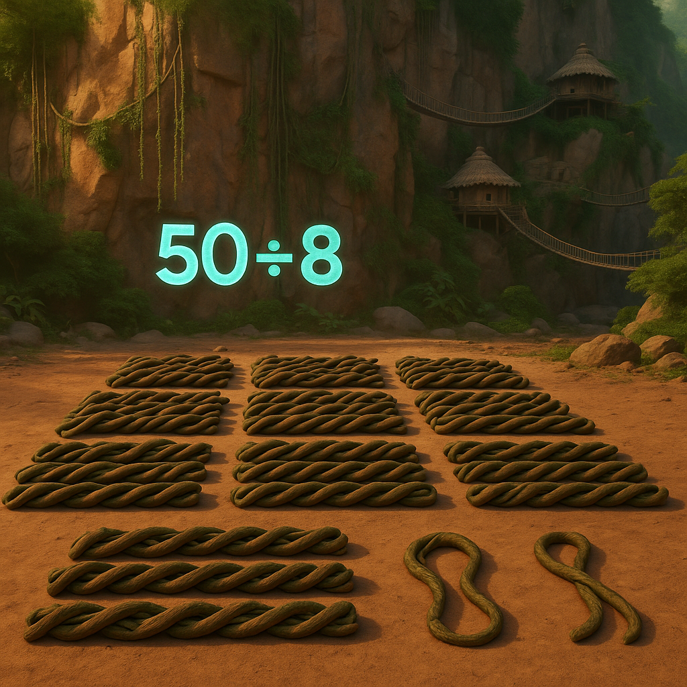
Press ▶ to continue
Blaze showed Tangle: try groups of five instead of eight. She spread the fifty vines out evenly. Ten perfect groups. No vines left over. Tangle went very still.
🔒 Listen to unlock!
⭐⭐ MediumDivision · Year 4
🌿
Y4 Question 5 — No Remainder
Now try 50 vines in groups of 5.
How many groups? Any left over?
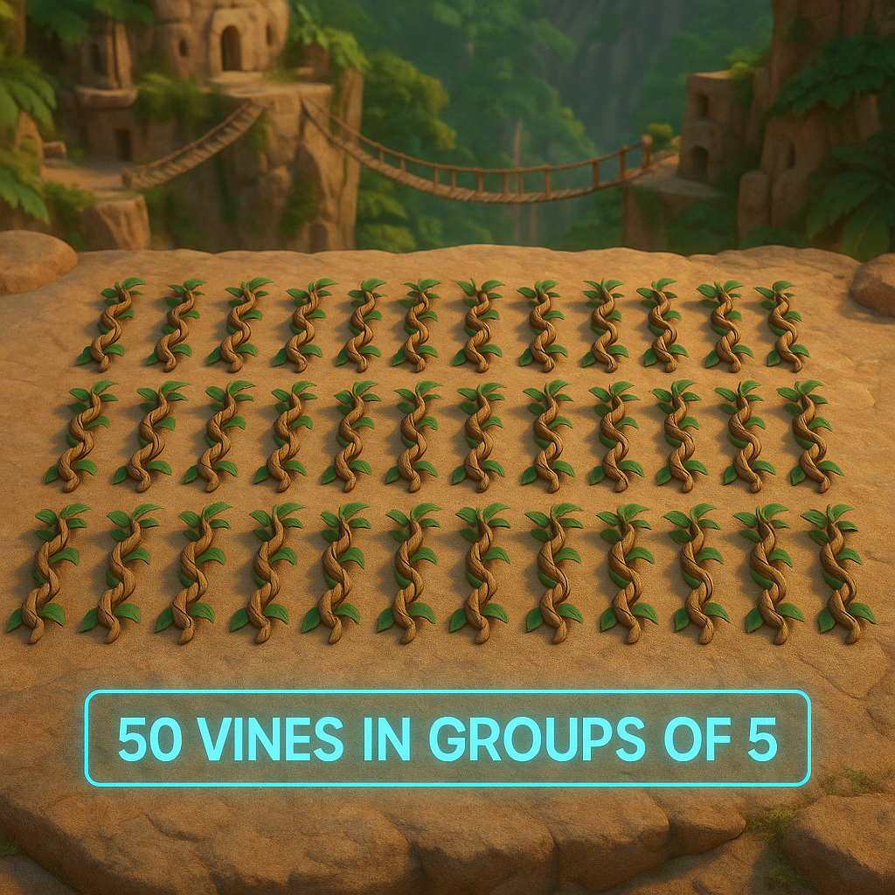
🪵 Chapter 4 — The Bridge Problem
Not Enough Planks. Almost Enough.
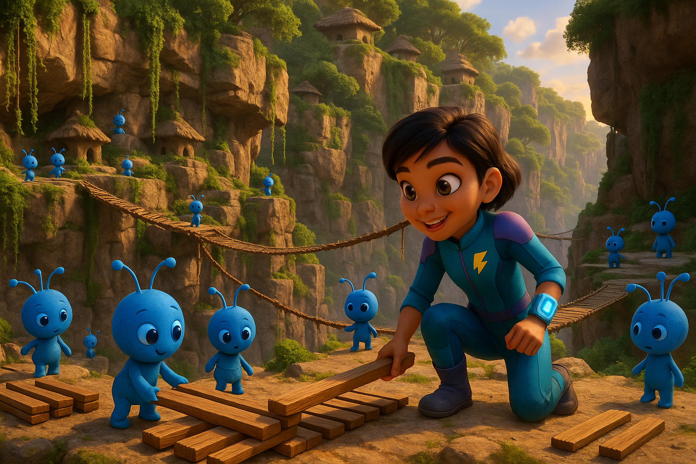
Press ▶ to hear the story
The raft had solved the immediate problem. But the crumbling ledge wasn't going anywhere. Split Ridge needed proper rope bridges — and Elder Crag had twenty-seven planks stored in the supply cave. Each bridge needed six planks to be safe.
Blaze did the calculation and smiled. Four complete bridges, with three planks to spare. Not enough for a fifth, but enough for four solid crossings. Sometimes a remainder is exactly what you need — it just can't be the answer on its own.
Then: thirty-one Sprockets. Four bridges. Elder Crag looked at Blaze. Blaze looked at the bridges. "It won't divide evenly," she said. "It never does at Split Ridge. That's why we need to know what to do with the leftovers."
🔒 Listen to the story to unlock this challenge!
⭐⭐ MediumRemainders · Year 4
🪵
Y4 Question 6 — Planks and Bridges
27 planks available. Each bridge needs 6 planks.
How many complete bridges can be built? How many planks are left over?
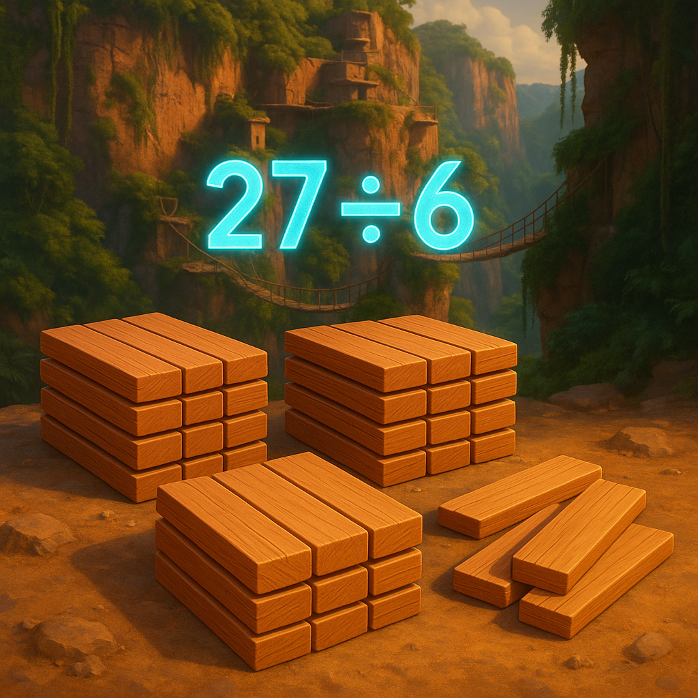
Press ▶ to continue
Thirty-one Sprockets, spread across four bridges. They need to cross in roughly equal groups. Three bridges carry seven Sprockets each, and one bridge carries the last four.
🔒 Listen to unlock!
⭐⭐ MediumRemainders · Year 4
🪵
Y4 Question 7 — Sprockets on Bridges
31 Sprockets across 4 bridges.
How many per bridge, and how many left over for the last bridge?
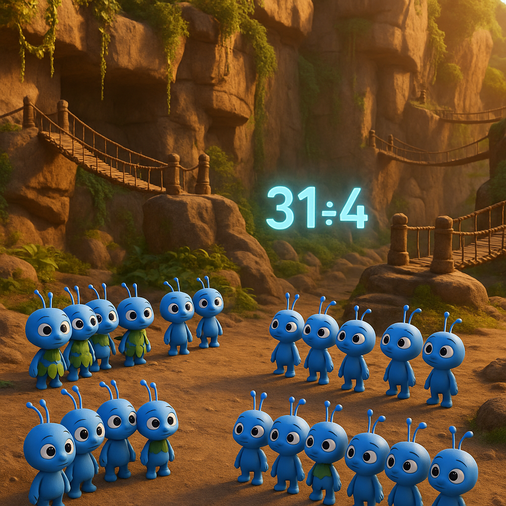
Press ▶ to continue
The bridges could move eight Sprockets per minute. All thirty-one needed to cross. How many minutes to get everyone safely across?
🔒 Listen to unlock!
⭐⭐⭐ HardRemainders · Year 4
⏱️
Y4 Question 8 — Round Up to Save Everyone
31 Sprockets, 8 per minute crossing.
How many minutes to get everyone across? (Remember: you must round up!)
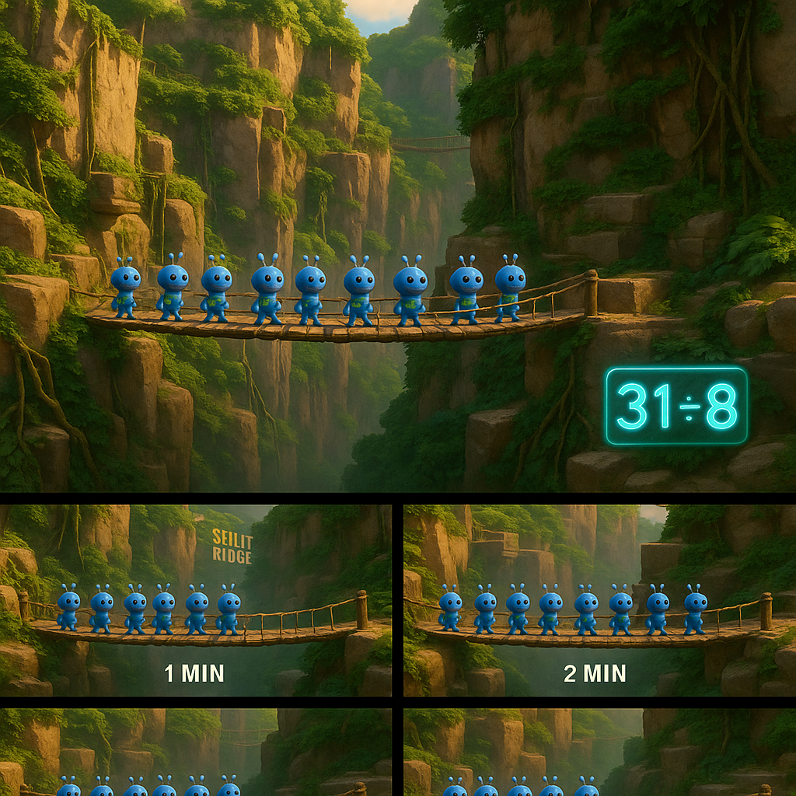
🌿 Chapter 5 — The Vines Come Back
It Brought Them All Back.
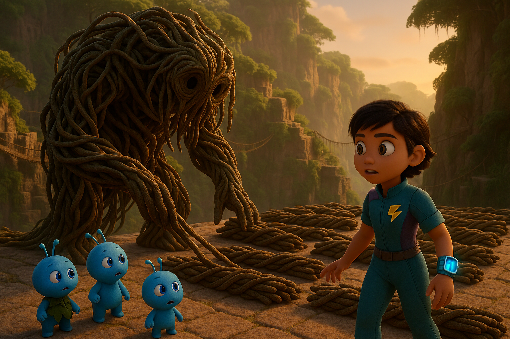
Press ▶ to hear the story
The rescue was complete. Every Sprocket was safe on the platform, the bridges were holding, and Elder Crag had reluctantly conceded that remainders were sometimes useful. A good day at Split Ridge.
The rescued Sprockets had brought a gift from their side of the ridge: forty-three star-fruits for the whole village of seven families. Another remainder problem. Blaze was beginning to think Split Ridge had been built by someone who hated even numbers.
But it was what happened next that stopped everyone. Tangle, which had been sitting quietly at the edge of the platform, stood up. And began unloading vines. Not fifty. Not a hundred. Vine after vine after vine — all the ones it had taken. All of them. Arranged in perfect groups of twelve, laid out along the clifftop. It was giving them back.
🔒 Listen to the story to unlock this challenge!
⭐⭐⭐ HardRemainders · Year 4
⭐
Y4 Question 9 — Star-Fruit Share
43 star-fruits for 7 families.
How many whole fruits per family, and how many left over?
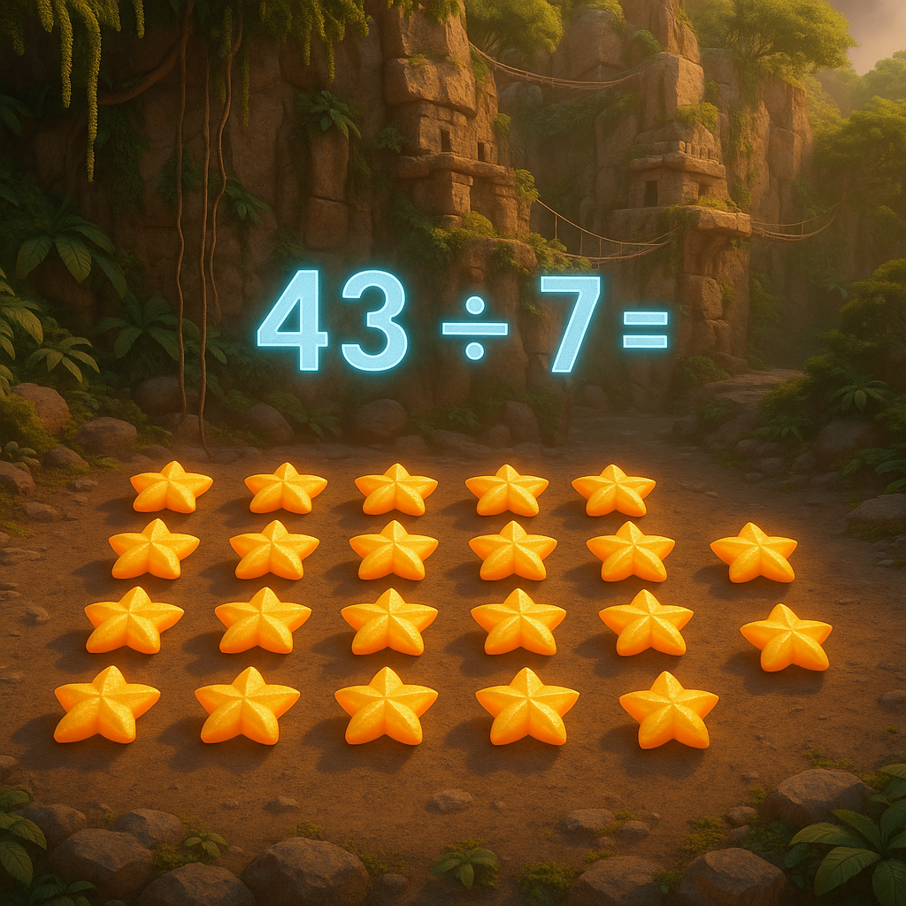
Press ▶ to continue
The biggest share of all: Split Ridge needed to send food to three cut-off villages. One hundred units, divided as equally as possible between three villages. Not everything fits perfectly. But sometimes, almost equal is fair enough.
🔒 Listen to unlock the Boss Challenge!
👑 Boss ChallengeRemainders · Year 4
🏆
Y4 Question 10 — BOSS: The Big Share
100 units of food for 3 villages.
How many does each village get? How many are left over?
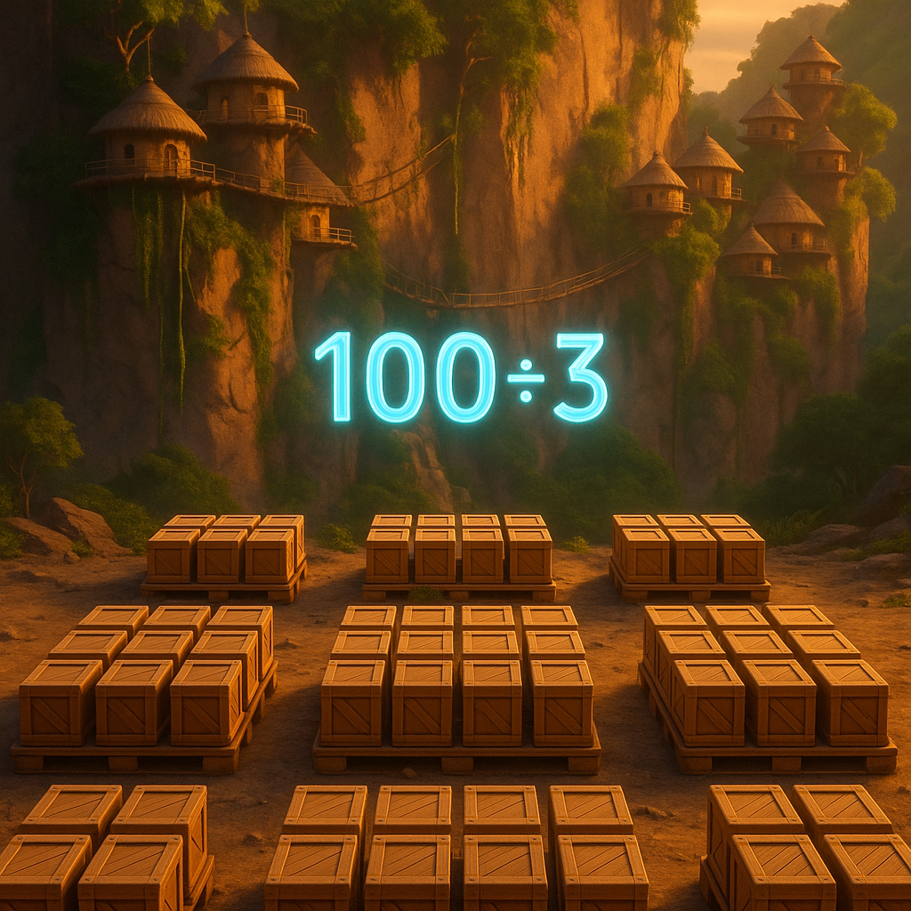
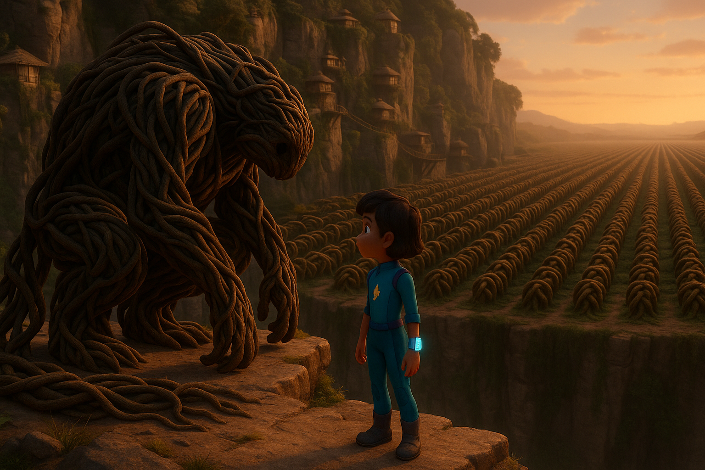
Press ▶ to hear what happens next
When the last vine was laid down, Tangle stepped back. All the stolen vines — returned. Arranged in perfect groups of twelve along the clifftop.
Then it sat down at the edge of the platform. Not leaving. Just... waiting.
Blaze looked at the rows of vine bundles. Then at Tangle. It hadn't taken the vines to cause harm. It had taken them because they were beautiful, and because it had never known there was anyone else to share them with. Now it did.
🪨
MISSION COMPLETE!
You scored 10 / 10!
⭐⭐⭐
The bridges are built, the Sprockets are safe, and Tangle has given back everything it took. It just didn't know there was anyone to share with. Now it does.